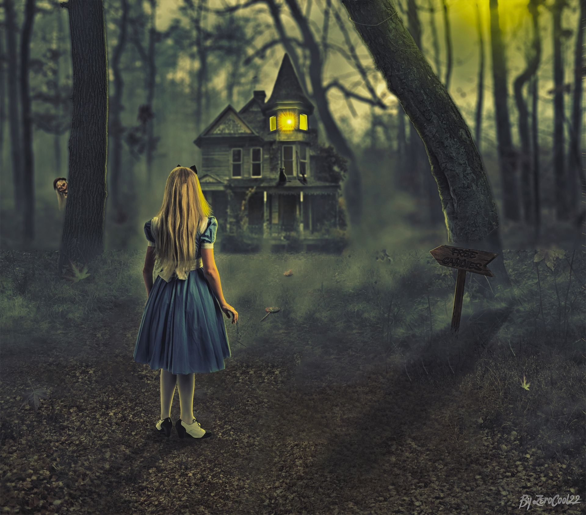

|  |
A Haunted Halt This is a soundscape that I created as part of my Composing Digital Media class in Fall 2019. This soundscape unfolds the story of a girl who faces an unexpected halt in the middle of her road trip to her parent's house. Seeking help, she walks towards a deserted house by the roadside but ends up having the most terrigfying experience of her life. For this project, I recorded sounds at home, gathered samples from the web and, layered them all using the Audacity software. Kindly visit mySoundscape Github repo to learn about this project in detail. |

|
Save The Planet This is a visual argument that I created as part of my Composing Digital Media class as well. The project depicts the effect of climate change on out planet. For this project, I collected different images from the web and combined them all into a cohesive piece using the GIMP software. Kindly visit myVisual Argument Github repo to learn about this project in detail. |